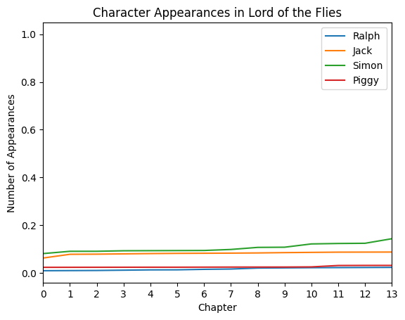

---
title: "DH 140 Final Project"
description: "Code for Final Project"
author: "Tiffany Deng"
date: "03/20/2023"
date-modified: "03/20/2023"
---DH 140 Final Project - Sentimental Analysis of Lord of the Flies
Data Description
I have decided to do my DH 140 final project on data points I will pull from the book, Lord of the Flies by William Golding. It is one of my favorite books and is used as an intro to literary analysis for many high school courses. Unfortunately, I do not have a data set yet, but I will create one based on the words and compile similar studies to the ones we did in class about Romeo and Juliet and Macbeth. I found an article called Eliciting Empathy with William Golding’s Lord of the Flies (https://www.diva-portal.org/smash/get/diva2:1462392/FULLTEXT01.pdf). The article talks about what emotions or is empathy evoked from the story. Additionally, they want to find out if the story can sustain that empathy and how it is achieved. I think this was an interesting question as I loved Lord of the Flies and reading it elicit various emotions in me. It can also be considered a controversial book as it depicts violence and the slow savage lifestyles the boys adopt. Another article that I will use in my analysis is Tracking a Descent to Savagery with the Wolfram Language: Plotting Sentiment Analysis in Lord of the Flies (https://blog.wolfram.com/2017/12/07/tracking-a-descent-to-savagery-with-the-wolfram-language-plotting-sentiment-analysis-in-lord-of-the-flies/). In this article, they use computational methods and coding to research the sentimental analysis throughout the book. I think it is interesting to compare the two different sides of analyzing the book: literature and scientific research. It will bring different perspectives on this book and its hidden meanings and theme. That is why I chose this topic to do more research on. The questions that I am seeking to answer are: How different is the sentimental analysis approach between computers and if so, which is more accurate to the themes of the book?
Below are the libraries and packages that are used in my research. Many of them are taken from what we have learned in class while others are added for specific uses and graphs.
import pandas as pd
import requests
import matplotlib.pyplot as plt
import nltk
from string import punctuation
import re
import numpy as np
import networkx as nx
import seaborn as sns
import nltk
from nltk.sentiment import vader
from nltk.sentiment.vader import SentimentIntensityAnalyzer
import string
from nltk.tokenize import word_tokenize
from nltk.corpus import stopwords
from nltk.stem.porter import PorterStemmer
nltk.download('punkt')
nltk.download('stopwords')
nltk.download('vader_lexicon')[nltk_data] Downloading package punkt to /home/jovyan/nltk_data...
[nltk_data] Package punkt is already up-to-date!
[nltk_data] Downloading package stopwords to /home/jovyan/nltk_data...
[nltk_data] Package stopwords is already up-to-date!
[nltk_data] Downloading package vader_lexicon to
[nltk_data] /home/jovyan/nltk_data...
[nltk_data] Package vader_lexicon is already up-to-date!TrueAs I was unable to find a .txt webpage for Lord of the Flies, I downloaded a PDF version, converted it to .txt, and uploaded the file to Jupyter. Afterwards, I opened the file in this notebook.
with open("Lordoftheflies_FULLTEXT.txt", "r") as f:
#print(f.read())
lordoftheflies = f.read()
#print(lordoftheflies)Afterwards I had to clean the file by changing all the letters to lower case before tokenizing each into strings. Afterwards I removed the stopwords as well as exclue the puncations. When I was doing the analysis, the puncations would often mess with my graphs, so I decided to take them out. Something else that I removed are “’s” and “n’t”. The reason was because when I was looking at the most frequent words, they would often appear without context, thus, I dediced to get ruin of them from the list as it would present a more accurate graph.
Something else I added was the sentimenal analyzer that will be used later for the sentiment graphs. There is also the initiation of the Porter stemmer, taking out the punucations, and finally adding them into a list.
tokens = word_tokenize(lordoftheflies.lower())
# Remove stopwords
stop_words = set(stopwords.words('english'))
stop_words.update(["'s", "n't"])
exclude = set(string.punctuation + '“”‘’' + '--' + '``' )
tokens = [word for word in tokens if word not in stop_words and word not in exclude]
analyzer = vader.SentimentIntensityAnalyzer()
#variable for using VADER's SentimentIntensityAnalyzer
#print(analyzer)
# Initialize the Porter stemmer
porter = PorterStemmer()
# Stem the words
stemmed_tokens = [porter.stem(word) for word in tokens]
stemmed_tokens = [token for token in stemmed_tokens if token not in ["'", "''", "--",'``']]
lotf_list = list(set(stemmed_tokens))
#print(lotf_list)
The next segment was used to get the frequency of all the words that appeared in Lord of the Flies. Afterwards, I was able to find that there are a total of 3836 words in the book with frequencies ranging from 794 to 1.
loft_wordfreq = nltk.FreqDist(stemmed_tokens)
df = pd.DataFrame({'words': nltk.FreqDist(stemmed_tokens).keys(),
'frequencies': nltk.FreqDist(stemmed_tokens).values()})
print(df) words frequencies
0 lord 13
1 fli 26
2 william 1
3 gold 5
4 chapter 13
... ... ...
3831 grief 1
3832 infect 1
3833 unwip 1
3834 trim 1
3835 cruiser 1
[3836 rows x 2 columns]print(df.head())
print(df.tail()) words frequencies
0 lord 13
1 fli 26
2 william 1
3 gold 5
4 chapter 13
words frequencies
3831 grief 1
3832 infect 1
3833 unwip 1
3834 trim 1
3835 cruiser 1The next segment is just showing the mean, median, mode, and trimmed mean of the word frequency for Lord of the Flies The mean was 8 meaning that on average a word would appear around 8 times. The median is 2, which means that the overall wirdfreuecy is left skewing. In order words, it means that majority of the words often appear less than 8 times in the book. The trimmed mean is 7.47 which further proves that the higher name frequenies are outliers and most of the words appear equal to or less than 8 times.
# calculate mean
mean = df['frequencies'].mean()
# calculate median
median = df['frequencies'].median()
# calculate mode
mode = df['frequencies'].mode()[0]
# calculate trimmed mean
trimmed_mean = df['frequencies'].sort_values()[5:-5].mean()
# trim the top and bottom 5 values
# print the results
print('Mean:', mean)
print('Median:', median)
print('Mode:', mode)
print('Trimmed mean:', trimmed_mean)Mean: 8.003649635036496
Median: 2.0
Mode: 1
Trimmed mean: 7.4754312598013595/tmp/ipykernel_142/4129957502.py:11: FutureWarning: The behavior of `series[i:j]` with an integer-dtype index is deprecated. In a future version, this will be treated as *label-based* indexing, consistent with e.g. `series[i]` lookups. To retain the old behavior, use `series.iloc[i:j]`. To get the future behavior, use `series.loc[i:j]`.
trimmed_mean = df['frequencies'].sort_values()[5:-5].mean()import matplotlib.pyplot as plt
#plot the histogram with labeled x- and y-axises taken from the datafram
plot_freq = df.plot.bar(x='words', y='frequencies', rot=0)
plt.xlabel('Words')
plt.ylabel('Word Frequency')
plt.title('Word Frequencies in Lord of the Flies')
#print the plot
print(plot_freq)AxesSubplot(0.125,0.11;0.775x0.77)This graph shows the word frequencies of all the words that appear in Lord of the Flies. This is not a good graph as everything is zoomed out and it is hard to find specific data points. However, it does match the statistical analysis above, where major of the words do not appear more than 8 times and there are very few outliers that reach a frequency of more than 100.
df_new = df.sort_values(by='frequencies', ascending=False)
print(df_new.head(15))
df_new[:15].plot.bar(x='words', y='frequencies', rot=0)
#printing the plot for the first five records (based on the head function)
plt.xlabel('Words')
plt.ylabel('Word Count')
plt.title('The Fifteen Most Frequent Words in Lord of the Flies')
#print out x- and y-labels and the title
plt.show()
#print the plot words frequencies
188 ralph 794
424 piggi 413
992 jack 371
56 said 261
107 look 257
551 go 212
1383 fire 212
8 boy 208
5 one 203
86 back 203
51 like 194
159 could 181
674 conch 180
67 got 167
14 rock 167This is a better representation of the word frequency. It shows the fifteen most common words that appear in (Lord of the Flies*. We see the words with the most frequencies are the names of the characters, like Ralph, Jack, and Piggi. However, the other words give an interesting insight on the potential tone and sentimental anaylsis of the story.
Below, we split the words up to create the most postivie and the most negative words based on the sentiment analyzer. This way we can perform a sentimental analysis and determine the overall tone and mood of the story and how much these words effect that.
analyzer = SentimentIntensityAnalyzer()
# Create empty lists for positive and negative words
positive_words_lotf = []
negative_words_lotf = []
# Iterate over the Macbeth word list
for word in stemmed_tokens:
# Get the compound score of the word
compound_score = analyzer.polarity_scores(word)['compound']
# If the compound score is positive, add the word to the positive-word list
if compound_score > 0:
positive_words_lotf.append(word)
# If the compound score is negative, add the word to the negative-word list
elif compound_score < 0:
negative_words_lotf.append(word)
# Print the positive and negative word lists
print('Positive words:', positive_words_lotf)
print('Negative words:', negative_words_lotf)Positive words: ['fair', 'hand', 'grey', 'vision', 'like', 'fair', 'like', 'care', 'fair', 'safe', 'fair', 'fair', 'fair', 'casual', 'fair', 'delight', 'grin', 'fair', 'allow', 'fair', 'reach', 'interest', 'fair', 'smile', 'pride', 'smile', 'hand', 'grey', 'laugh', 'bright', 'care', 'hand', 'extend', 'want', 'care', 'interest', 'laughter', 'hand', 'want', 'laugh', 'grin', 'great', 'top', 'reach', 'cool', 'clear', 'bright', 'delight', 'god', 'true', 'care', 'warmer', 'huge', 'care', 'like', 'smile', 'allow', 'well', 'clean', 'like', 'clean', 'reach', 'like', 'grey', 'care', 'protect', 'dream', 'reach', 'like', 'bright', 'bright', 'delight', 'smile', 'smile', 'laugh', 'smile', 'like', 'brilliant', 'care', 'interest', 'hand', 'want', 'like', 'hand', 'fair', 'friend', 'kind', 'hand', 'kind', 'laughter', 'like', 'fair', 'help', 'clean', 'interest', 'hand', 'smile', 'cheer', 'grey', 'fair', 'attract', 'reach', 'like', 'grin', 'like', 'grin', 'vital', 'laugh', 'hand', 'laughter', 'diamond', 'clear', 'hand', 'join', 'best', 'like', 'interest', 'superior', 'better', 'laughter', 'laughter', 'join', 'clean', 'laughter', 'grin', 'smile', 'want', 'well', 'wish', 'good', 'attract', 'hand', 'want', 'hand', 'want', 'hand', 'hand', 'applaud', 'eager', 'want', 'smile', 'like', 'grey', 'smile', 'straight', 'straight', 'eager', 'laugh', 'straight', 'good', 'like', 'want', 'want', 'care', 'straight', 'better', 'like', 'kind', 'glamour', 'glamour', 'laugh', 'bright', 'laugh', 'laugh', 'great', 'like', 'easiest', 'like', 'top', 'like', 'top', 'accept', 'great', 'like', 'triumph', 'top', 'reach', 'top', 'fit', 'top', 'like', 'bold', 'like', 'triumphant', 'friend', 'wise', 'sure', 'cool', 'laugh', 'want', 'curious', 'like', 'like', 'laugh', 'well', 'smart', 'help', 'clear', 'well', 'hand', 'fair', 'top', "'hand", 'like', 'great', 'smile', 'hand', 'like', 'fair', 'grin', 'good', 'hand', 'good', 'like', 'amazon', 'good', 'fun', 'hand', 'hand', 'want', 'hand', 'laughter', 'hand', 'laughter', 'hand', 'great', 'want', 'laugh', 'laugh', 'allow', 'cool', 'like', 'laughter', 'cheer', 'want', 'dream', 'laugh', 'like', 'laughter', 'hand', 'sure', 'humor', 'good', 'humor', 'grin', 'want', 'fun', 'want', 'passion', 'agreement', 'like', 'want', 'cheer', 'better', 'like', 'respect', 'triumph', 'help', 'top', 'best', 'like', 'like', 'respect', 'laughter', 'like', 'sigh', 'top', 'want', 'growth', 'like', 'reach', 'top', 'like', 'top', 'grin', 'share', 'glamour', 'friendship', 'grin', 'join', 'great', 'laugh', 'triumphant', 'interest', 'top', 'clear', 'hand', 'bright', 'reach', 'cheer', 'hand', 'hand', 'passion', 'great', 'like', 'spark', 'clean', 'cool', 'enjoy', 'fresh', 'great', 'spark', 'like', 'good', 'like', 'help', 'top', 'hand', 'best', 'special', 'hand', 'care', 'hand', 'best', 'grin', 'like', 'warmth', 'want', 'like', 'great', 'laugh', 'joke', 'like', 'bright', 'cheer', 'kind', 'free', 'interest', 'care', 'splendid', 'want', 'laughter', 'like', 'laugh', 'like', 'like', 'like', 'like', 'hand', 'like', 'impress', 'hand', 'warm', 'sigh', 'bright', 'grey', 'warm', 'like', 'warm', 'join', 'strength', 'support', 'grey', 'fresh', 'well', 'better', 'play', 'care', 'love', 'want', 'well', 'want', 'passion', 'casual', 'care', 'help', 'want', 'play', 'like', 'safe', 'well', 'dream', 'good', 'good', 'grin', 'glamour', 'sure', 'hand', 'well', 'best', 'like', 'fair', 'solid', 'flatter', 'like', 'want', 'want', 'like', 'want', 'bright', 'interest', 'brilliant', 'help', 'want', 'help', 'reach', 'consent', 'love', 'warm', 'laugh', 'bright', 'delight', 'like', 'great', 'reach', 'hand', 'hand', 'like', 'great', 'allow', 'great', 'top', 'clear', 'bright', 'cool', 'clear', 'accept', 'bright', 'sweet', 'play', 'good', 'hope', 'like', 'success', 'like', 'reach', 'like', 'cool', 'like', 'play', 'play', 'reach', 'comfort', 'play', 'bright', 'enjoy', 'entertain', 'passion', 'interest', 'play', 'play', 'play', 'great', 'accept', 'attract', 'well', 'fair', 'interest', 'straight', 'laugh', 'interest', 'hand', 'play', 'play', 'casual', 'great', 'like', 'great', 'triumphant', 'care', 'hand', 'strong', 'protect', 'like', 'laugh', 'friend', 'teas', 'interest', 'eager', 'like', 'like', 'like', 'like', 'hand', 'smile', 'bright', 'laugh', 'laughter', 'laugh', 'fair', 'interest', 'like', 'great', 'smile', 'smile', 'matter', 'certain', 'smile', 'good', 'want', 'glad', 'smile', 'play', 'like', 'hand', 'hand', 'fair', 'sigh', 'funnel', 'hand', 'reach', 'better', 'god', 'god', 'straight', 'save', 'reach', 'like', 'care', 'great', 'reach', 'reach', 'top', 'hail', 'share', 'grin', 'grin', 'hand', 'clean', 'laugh', 'top', 'grin', 'laugh', 'like', 'hand', 'truth', 'hand', 'brilliant', 'hand', 'agreement', 'passion', 'great', 'top', 'laugh', 'laughter', 'better', 'hand', 'attract', 'accept', 'like', 'great', 'respect', 'hand', 'hand', 'share', 'grin', 'join', 'allow', 'enthusiast', 'brighter', 'smile', 'splendor', 'care', 'fun', 'grey', 'like', 'like', 'top', 'comfort', 'laughter', 'grey', 'straight', 'support', 'like', 'hand', 'wise', 'like', 'kind', 'affection', 'straight', 'impress', 'wish', 'like', 'attract', 'like', 'fun', 'laugh', 'joke', 'clever', 'straight', 'straight', 'join', 'enjoy', 'fresh', 'laugh', 'clear', 'clean', 'swift', 'laughter', 'grey', 'hand', 'luck', 'passion', 'laugh', 'agreement', 'want', 'well', 'certain', 'hand', 'reach', 'hand', 'well', 'straight', 'kind', 'like', 'care', 'like', 'bright', 'reach', 'help', 'like', 'dream', 'dream', 'like', 'like', 'well', 'like', 'hand', 'applaud', 'relief', 'hand', 'laugh', 'well', 'hand', 'dream', 'dream', 'laugh', 'proud', 'agreement', 'hand', 'grin', 'want', 'well', 'like', 'laughter', 'well', 'like', 'like', 'number', 'fair', 'free', 'admit', 'reach', 'share', 'save', 'laugh', 'laugh', 'join', 'clever', 'laugh', 'comfort', 'clear', 'casual', 'laugh', 'laugh', 'agreement', 'straight', 'fresh', 'matter', 'hand', 'delight', 'laughter', 'sure', 'grey', 'hand', 'care', 'care', 'want', 'like', 'well', 'hand', 'hand', 'favor', 'care', 'strong', 'laughter', 'laughter', 'want', 'like', 'like', 'good', 'want', 'respect', 'nice', 'like', 'wish', 'wish', 'wish', 'help', 'save', 'brave', 'bright', 'great', 'fit', 'allow', 'reach', 'hand', 'bright', 'warm', 'safe', 'share', 'laughter', 'like', 'warmth', 'fit', 'hand', 'sigh', 'like', 'spark', 'top', 'dream', 'reach', 'like', 'matter', 'grey', 'warm', 'top', 'fan', 'hand', 'hand', 'kind', 'bright', 'slap', 'bright', 'like', 'kind', 'curious', 'like', 'clean', 'good', 'clear', 'want', 'want', 'save', 'want', 'want', 'reach', 'better', 'like', 'care', 'thank', 'heroic', 'sigh', 'allow', 'smile', 'accept', 'reach', 'top', 'great', 'well', 'matter', 'hand', 'protect', 'like', 'growth', 'like', 'like', 'like', 'cool', 'allow', 'like', 'fresh', 'hand', 'matter', 'hand', 'hand', 'great', 'like', 'want', 'want', 'want', 'bright', 'fresh', 'certain', 'certain', 'dream', 'grey', 'like', 'like', 'hand', 'clean', 'clean', 'well', 'kind', 'like', 'comfort', 'sigh', 'progress', 'retreat', 'like', 'dream', 'hand', 'hand', 'smile', 'grin', 'smile', 'love', 'bargain', 'glad', 'success', 'bright', 'top', 'bright', 'kind', 'reach', 'great', 'pride', 'respect', 'good', 'want', 'like', 'like', 'play', 'laugh', 'strength', 'hand', 'cheer', 'good', 'want', 'want', 'like', 'want', 'laugh', 'well', 'like', 'clear', 'want', 'dream', 'hand', 'well', 'clear', 'like', 'like', 'bright', 'like', 'great', 'safe', 'treat', 'play', 'good', 'clear', 'like', 'smile', 'want', 'sigh', 'swift', 'straight', 'agreement', 'want', 'straight', 'casual', 'fresh', 'spirit', 'good', 'success', 'relax', 'cool', 'casual', 'well', 'like', 'well', 'good', 'top', 'want', 'hand', 'save', 'top', 'good', 'kind', 'kind', 'consent', 'join', 'hand', 'brave', 'top', 'hand', 'hand', 'hand', 'top', 'top', 'clear', 'like', 'great', 'save', 'gift', 'sure', 'sure', 'safe', 'sure', 'good', 'brave', 'want', 'hand', 'well', 'good', 'kind', 'sigh', 'like', 'like', 'top', 'want', 'hand', 'hand', 'want', 'hand', 'clear', 'great', 'care', 'play', 'clear', 'number', 'want', 'like', 'hand', 'well', 'help', 'help', 'good', 'allow', 'hand', 'certain', 'perfect', 'greatest', 'passion', 'delight', 'expand', 'pride', 'good', 'help', 'hand', 'protect', 'comfort', 'hand', 'care', 'hand', 'matter', 'growth', 'care', 'great', 'cheer', 'cheer', 'care', 'better', 'casual', 'play', 'great', 'happier', 'great', 'grin', 'triumph', 'spark', 'kind', 'great', 'grin', 'thank', 'thank', 'laughter', 'reach', 'great', 'dream', 'passion', 'fresh', 'like', 'enjoy', 'bliss', 'great', 'sure', 'strength', 'bright', 'top', 'hand', 'clear', 'hand', 'laugh', 'laughter', 'clean', 'hand', 'want', 'hand', 'gift', 'accept', 'gift', 'grin', 'like', 'grin', 'gift', 'joke', 'great', 'grey', 'grin', 'care', 'hand', 'like', 'play', 'number', 'grin', 'sigh', 'like', 'expand', 'treat', 'well', 'fair', 'like', 'sigh', 'want', 'care', 'like', 'care', 'like', 'accept', 'pride', 'save', 'well', 'fun', 'want', 'join', 'join', 'safe', 'like', 'hand', 'like', 'urgent', 'fun', 'sure', 'affection', 'respect', 'hand', 'fun', 'want', 'laugh', 'like', 'urgent', 'brilliant', 'hand', 'good', 'fun', 'fun', 'like', 'hand', 'want', 'well', 'better', 'play', 'want', 'like', 'help', 'laughter', 'laughter', 'expand', 'like', 'well', 'better', 'want', 'fun', 'fun', 'clear', 'like', 'fit', 'play', 'like', 'clear', 'reach', 'huge', 'bright', 'like', 'reach', 'stronger', 'top', 'sigh', 'hand', 'freed', 'great', 'hand', 'harmless', 'reach', 'great', 'care', 'best', 'like', 'play', 'comfort', 'warmer', 'clean', 'laugh', 'hand', 'wish', 'wish', 'wish', 'progress', 'care', 'wise', 'sure', 'warm', 'laugh', 'hand', 'hand', 'great', 'like', 'like', 'great', 'laughter', 'cheer', 'gift', 'want', 'want', 'pride', 'calm', 'like', 'join', 'protect', 'join', 'hand', 'join', 'fun', 'clever', 'help', 'join', 'bright', 'like', 'clever', 'brighter', 'eager', 'glad', 'like', 'like', 'urgent', 'like', 'like', 'like', 'great', 'top', 'save', 'cool', 'clear', 'great', 'clear', 'clear', 'bright', 'accept', 'clear', 'bright', 'solid', 'great', 'bright', 'steadfast', 'care', 'good', 'great', 'care', 'clear', 'play', 'hand', 'laugh', 'laugh', 'laugh', 'like', 'good', 'like', 'kind', 'well', 'like', 'good', 'want', 'god', 'want', 'great', 'better', 'clean', 'hand', 'good', 'join', 'safest', 'friend', 'want', 'top', 'hand', 'earnest', 'care', 'agreement', 'care', 'well', 'better', 'hand', 'hand', 'hand', 'hand', 'hand', 'want', 'admit', 'comfort', 'better', 'wish', 'clear', 'good', 'like', 'well', 'good', 'good', 'good', 'good', 'wish', 'hand', 'play', 'greatest', 'passion', 'vigor', 'curious', 'comfort', 'yeah', 'save', 'brilliant', 'perfect', 'attract', 'safer', 'like', 'success', 'joke', 'thank', 'dream', 'care', 'sigh', 'save', 'hand', 'pray', 'reach', 'want', 'like', 'like', 'top', 'passion', 'clear', 'cool', 'easier', 'want', 'pride', 'matter', 'want', 'truth', 'hand', 'grey', 'spark', 'hand', 'allow', 'hand', 'care', 'best', 'hand', 'want', 'like', 'smarten', 'want', 'good', 'like', 'laugh', 'laugh', 'laugh', 'hand', 'stronger', 'favor', 'strong', 'hand', 'like', 'straight', 'like', 'pride', 'passion', 'glad', 'better', 'help', 'like', 'sigh', 'like', 'like', 'better', 'well', 'well', 'want', 'kindly.', 'curious', 'vital', 'care', 'hand', 'clean', 'like', 'kind', 'prospect', 'safe', 'safe', 'top', 'urgent', 'freed', 'comfort', 'like', 'hand', 'laughter', 'laughter', 'want', 'care', 'play', 'want', 'like', 'free', 'consent', 'attract', 'relax', 'play', 'like', 'hope', 'laughter', 'play', 'care', 'laughter', 'hand', 'want', 'number', 'cheer', 'cheer', 'strength', 'hand', 'like', 'better', 'like', 'like', 'great', 'better', 'better', 'solid', 'clear', 'great', 'top', 'like', 'sigh', 'like', 'straight', 'great', 'hand', 'join', 'join', 'join', 'like', 'safe', 'top', 'hand', 'hand', 'hand', 'safe', 'like', 'best', 'clear', 'prevent', 'grin', 'top', 'clear', 'hand', 'grin', 'like', 'like', 'grin', 'grin', 'grin', 'accomplish', 'true', 'relax', 'well', 'laugh', 'care', 'comfort', 'hand', 'top', 'top', 'like', 'accept', 'like', 'like', 'hand', 'support', 'top', 'agreement', 'honest', 'better', 'admit', 'safe', 'help', 'like', 'want', 'good', 'care', 'like', 'like', 'like', 'urgent', 'want', 'matter', 'god', 'well', 'good', 'top', 'fit', 'like', 'hand', 'top', 'hand', 'fresh', 'hand', 'cool', 'like', 'free', 'like', 'luck', 'great', 'clever', 'care', 'top', 'triumph', 'certain', 'sure', 'laughter', 'grin', 'like', 'top', 'top', 'like', 'top', 'hand', 'cheer', 'progress', 'clear', 'like', 'cheer', 'hand', 'progress', 'kind', 'hand', 'hand', 'laughter', 'great', 'laugh', 'hand', 'like', 'swift', 'like', 'free', 'hope', 'hand', 'like', 'like', 'calm', 'hand', 'best', 'well', 'grin', 'better', 'reach', 'like', 'great', 'best', 'great', 'hand', 'hand', 'straight', 'sure', 'great', 'like', 'bright', 'expand', 'like', 'warm', 'huge', 'hand', 'hand', 'fun', 'reach', 'like', 'grin', 'cheer', 'good', 'hope', 'truth', 'clean', 'better', 'like', 'help', 'good', 'like', 'glamour', 'like', 'great', 'true', 'wise', 'friend', 'allow']
Negative words: ['lower', 'stuck', 'broken', 'witch-', 'shaken', 'stop', 'jerk', 'shook', 'drop', 'attack', 'shook', 'drag', 'danger', 'shook', 'crash', 'hard', 'pain', 'smear', 'cautious', 'broken', 'torn', 'fallen', 'decay', 'screw', 'lost', 'awkward', 'devil', 'lower', 'critic', 'pain', 'interrupt', 'disappoint', 'envious', 'suck', 'loom', 'shook', 'suck', 'bore', 'dead', 'shook', 'bomb', 'dead', 'problem', 'dead', 'die', 'threaten', 'attack', 'blind', 'fallen', 'ill-', 'stop', 'poor', 'danger', 'pay', 'worn', 'shook', 'doubt', 'low', 'harsh', 'harsh', 'fail', 'drop', 'low', 'torn', 'mess', 'lower', 'violent', 'shake', 'dumb', 'fallen', 'shock', 'shook', 'die', 'bore', 'screw', 'anger', 'protest', 'flop', 'broke', 'fallen', 'bad', 'forget', 'die', 'avoid', 'protest', 'broke', 'disappear', 'lose', 'lack', 'die', 'stop', 'pretend', 'hurt', 'crush', 'insult', 'low', 'block', 'block', 'shook', 'difficult', 'exhaust', 'solemn', 'gloom', 'pretend', 'fallen', 'assault', 'struck', 'shook', 'bomb', 'drag', 'stop', 'rob', 'drag', 'flop', 'hunger', 'drop', 'slash', 'hard', 'strike', 'mad', 'terror', 'scream', 'jerk', 'terror', 'stab', 'cut', 'cut', 'slam', 'contradict', 'broke', 'fire', 'discard', 'fallen', 'uncertain', 'broke', 'broke', 'kill', 'slam', 'interrupt', 'die', 'bore', 'panic', 'grave', 'doubt', 'grave', 'grave', 'kill', 'annoy', 'defeat', 'lost', 'fire', 'fire', 'fire', 'forgotten', 'broken', 'scorn', 'doubt', 'stop', 'crash', 'disgust', 'decay', 'dead', 'rotten', 'broke', 'decay', 'dead', 'burden', 'burden', 'crash', 'lost', 'dump', 'stop', 'shame', 'fire', 'cautious', 'shook', 'terror', 'rotten', 'broke', 'rotten', 'shook', 'fire', 'fire', 'fire', 'exhaust', 'fire', 'fire', 'smear', 'fire', 'fire', 'fire', 'fire', 'fire', 'grave', 'drop', 'whine', 'fire', 'bitter', 'dead', 'fire', 'dead', 'die', 'fire', 'fire', 'fire', 'broke', 'fire', 'fire', 'shake', 'fire', 'hurt', 'lack', 'cock', 'fire', 'nervous', 'hell', 'scare', 'drag', 'fire', 'scare', 'lost', 'temper', "'fire", 'scream', 'fire', 'fire', 'fire', 'fire', 'die', 'death', 'fire', 'bomb', 'scream', 'fear', 'unbelieving.', 'shame', 'lost', 'lower', 'discomfort', 'stop', 'hide', 'drop', 'mad', 'whine', 'harsh', 'drop', 'hard', 'die', 'swear', 'rude', 'wreck', 'ruin', 'hard', 'hopeless', 'solemn', 'kill', 'mad', 'kill', 'rage', 'hard', 'difficult', 'drop', 'anger', 'frighten', 'shook', 'scream', 'interrupt', 'shame', 'serious', 'mad', 'critic', 'fire', 'fire', 'screw', 'steal', 'pretend', 'bother', 'hate', 'stop', 'low', 'bore', 'drop', 'rig', 'fallen', 'cock', 'critic', 'drop', 'die', 'prick', 'forgotten', 'odd', 'loom', 'drop', 'restless', 'miser', 'suffer', 'terror', 'trivial', 'bother', 'fire', 'fire', 'destruct', 'protest', 'uncertain', 'broke', 'drop', 'shock', 'low', 'forbid', 'drop', 'worn', 'trap', 'shock', 'shook', 'hard', 'miss', 'ruin', 'abandon', 'lost', 'fire', 'smear', 'war', 'grave', 'protest', 'mess', 'mess', 'slash', 'hid', 'shame', 'stab', 'discard', 'imperfect', 'shook', 'bore', 'dull', 'poor', 'flop', 'flop', 'useless', 'pretend', 'die', 'abandon', 'wreck', 'screw', 'hurt', 'anxious', 'discard', 'swear', 'stop', 'fire', 'stop', 'fire', 'fire', 'dead', 'fire', 'dead', 'scream', 'smear', 'worst', 'fire', 'bitter', 'cut', 'die', 'smear', 'kill', 'broke', 'drop', 'fire', 'fire', 'cut', 'fire', 'fault', 'fire', 'struck', 'shook', 'fire', 'bitter', 'timid', 'loss', 'fire', 'dismal', 'fire', 'stuck', 'terror', 'broken', 'whine', 'hysteria', 'trick', 'broke', 'fire', 'wrong', 'resent', 'trick', 'fire', 'dead', 'anger', 'trick', 'fire', 'tension', 'die', 'snub', 'fire', 'weapon', 'powerless', 'rage', 'barrier', 'fire', 'meaningless', 'fire', 'unkind', 'fire', 'fire', 'odd', 'doubt', 'lower', 'shame', 'slash', 'damn', 'rage', 'fire', 'fire', 'broke', 'broke', 'cut', 'pretend', 'pretend', 'cut', 'resent', 'die', 'stop', 'lost', 'lack', 'dirt', 'decay', 'grim', 'fault', 'fire', 'dead', 'restless', 'lament', 'broken', 'lost', 'worn', 'low', 'fire', 'anger', 'solemn', 'drop', 'protest', 'wrong', 'die', 'fire', 'shook', 'fire', 'fire', 'fire', 'fire', 'fire', 'die', 'fire', 'kill', 'die', 'fire', 'fire', 'fire', 'fire', 'drop', 'fire', 'fire', 'gloom', 'fire', 'fear', 'frighten', 'moan', 'stop', 'fear', 'fear', 'frighten', 'fire', 'fear', 'frighten', 'frighten', 'scream', 'fear', 'fear', 'hurt', 'useless', 'interrupt', 'fear', 'frighten', 'doubt', 'frighten', 'fear', 'ghost', 'wrong', 'pain', 'frighten', 'war', 'fear', 'frighten', 'horrid', 'fight', 'fight', 'frighten', 'horror', 'frighten', 'horrid', 'shook', 'fight', 'horrid', 'contempt', 'fear', 'condemn', 'pretend', 'dread', 'broke', 'sorrow', 'wept', 'sorrow', 'lament', 'sorrow', 'sorrow', 'pretend', 'shook', 'hide', 'die', 'argument', 'frighten', 'frighten', 'fear', 'fire', 'argument', 'gloom', 'shock', 'peril', 'choke', 'broke', 'shock', 'ill', 'dirtiest', 'drop', 'crude', 'scream', 'ruin', 'defenseless', 'ghost', 'gloom', 'doubt', 'evil', 'ghost', 'ghost', 'broke', 'ghost', 'shaken', 'stop', 'broken', 'wrong', 'ghost', 'ghost', 'ghost', 'ghost', 'gloom', 'ghost', 'fire', 'bitter', 'scream', 'mock', 'terror', 'fire', 'tough', 'fire', 'lower', 'ghost', 'violent', 'stop', 'ghost', 'fire', 'die', 'blind', 'hate', 'fight', 'scare', 'scare', 'hate', 'stop', 'hate', 'fire', 'hurt', 'hurt', 'rotten', 'miss', 'fire', 'fire', 'lose', 'powerless', 'fought', 'drop', 'bore', 'flop', 'drag', 'strain', 'drop', 'dead', 'fire', 'fire', 'stop', 'stop', 'fire', 'fire', 'dead', 'fire', 'fire', 'fire', 'frantic', 'avoid', 'fire', 'fire', 'fire', 'fire', 'fire', 'scream', 'fire', 'fallen', 'shake', 'doubt', 'terror', 'sad', 'danger', 'cautious', 'dread', 'prick', 'fire', 'fear', 'torn', 'horror', 'choke', 'threat', 'frighten', 'frighten', 'hopeless', 'doubt', 'cramp', 'fire', 'suck', 'danger', 'scare', 'broke', 'scare', 'fire', 'fire', 'attack', 'fire', 'doubt', 'violent', 'fail', 'fire', 'sick', 'dread', 'forgotten', 'fool', 'hell', 'hide', 'disappear', 'hide', 'suck', 'rotten', 'rotten', 'broken', 'struck', 'bad', 'broken', 'broke', 'block', 'block', 'suck', 'stop', 'stop', 'struck', 'anger', 'shook', 'broke', 'danger', 'furious', 'struck', 'hurt', 'suck', 'forget', 'stop', 'cut', 'cut', 'suck', 'dirt', 'fallen', 'hard', 'dead', 'worn', 'steal', 'hard', 'disregard', 'suck', 'numb', 'barrier', 'helpless', 'condemn', 'pain', 'strain', 'strain', 'shook', 'shook', 'violent', 'drop', 'fear', 'stop', 'die', 'bother', 'terror', 'crash', 'scream', 'foolish', 'fright', 'stuck', 'stuck', 'stuck', 'suck', 'suck', 'mock', 'mock', 'terror', 'pain', 'stop', 'hurt', 'kill', 'kill', 'scream', 'fight', 'cut', 'kill', 'fight', 'hurt', 'frighten', 'hurt', 'fire', 'pretend', 'pretend', 'kill', 'fire', 'kill', 'slash', 'suck', 'blind', 'haunt', 'cut', 'danger', 'critic', 'crestfallen', 'miss', 'hate', 'hurt', 'beaten', 'broke', 'prick', 'doubt', 'frighten', 'vicious', 'threaten', 'bitter', 'bitter', 'low', 'bitter', 'powerless', 'stop', 'choke', 'blind', 'devil', 'stop', 'fool', 'shook', 'fault', 'fool', 'hate', 'tired', 'fear', 'frighten', 'hard', 'lower', 'mad', 'fume', 'danger', 'violent', 'forgotten', 'fool', 'stop', 'lag', 'hard', 'fire', 'smother', 'dead', 'fire', 'scare', 'scare', 'fear', 'ruin', 'abandon', 'miser', 'hell', 'jerk', 'fear', 'violent', 'panic', 'fight', 'fight', 'hide', 'hide', 'steal', 'fire', 'fire', 'beaten', 'rude', 'interrupt', 'interrupt', 'kill', 'coward', 'coward', 'coward', 'stab', 'shame', 'pain', 'avoid', 'embarrass', 'shook', 'drop', 'enraged.', 'pay', 'depress', 'dread', 'broke', 'fire', 'restless', 'fire', 'fire', 'wrong', 'fire', 'fire', 'fire', 'fire', 'broke', 'fire', 'fallen', 'useless', 'fire', 'rotten', 'avoid', 'fallen', 'panic', 'hysteria', 'fire', 'stop', 'fire', 'fire', 'fire', 'die', 'stop', 'drop', 'fire', 'hard', 'fire', 'fire', 'drop', 'steal', 'dull', 'drag', 'dump', 'fire', 'fire', 'broke', 'fire', 'threaten', 'avoid', 'bother', 'forget', 'forget', 'kill', 'kill', 'kill', 'bother', 'nervous', 'stop', 'fire-', 'crash', 'stop', 'stab', 'drop', 'stop', 'drop', 'dread', 'mad', 'drop', 'struck', 'dread', 'frantic', 'terror', 'stab', 'scream', 'kill', 'reek', 'ass', 'ass', 'avoid', 'fire', 'fire', 'fire', 'lower', 'kill', 'dead', 'cynic', 'bad', 'bother', 'wrong', 'lower', 'fire', 'gun', 'fire', 'dump', 'fire', 'fire', 'fire', 'fire', 'mess', 'scare', 'scare', 'fire', 'drown', 'die', 'die', 'fire', 'wrong', 'scream', 'fire', 'shame', 'fire', 'kill', 'scare', 'suck', 'grave', 'fire', 'grave', 'doubt', 'idiot', 'fire', 'fire', 'stop', 'fire', 'fire', 'fire', 'fire', 'doubt', 'fire', 'fire', 'stop', 'lame', 'fire', 'fire', 'fire', 'hard', 'shook', 'kill', 'forget', 'poor', 'warn', 'poor', 'lost', 'death', 'broke', 'shook', 'stop', 'glum', 'weak', 'pain', 'hid', 'scare', 'poor', 'sick', 'fire', 'forget', 'poor', 'broken', 'stink', 'miss', 'pain', 'stop', 'furious', 'stop', 'pain', 'pretend', 'fire', 'drag', 'fire', 'uncertain', 'fire', 'betray', 'warn', 'fire', 'dull', 'threat', 'lower', 'fire', 'fire', 'struck', 'dull', 'fire', 'whine', 'drop', 'struck', 'drop', 'drop', 'restless', 'scream', 'fire', 'terror', 'threat', 'terror', 'cut', 'lost', 'cut', 'terror', 'blind', 'cut', 'scream', 'broke', 'terror', 'scream', 'pain', 'cut', 'dead', 'cut', 'scream', 'broke', 'scream', 'struck', 'broke', 'scream', 'die', 'tension', 'broken', 'dead', 'dead', 'shock', 'worn', 'stop', 'stop', 'murder', 'stop', 'scare', 'scare', 'scare', 'low', 'stricken', 'stop', 'pretend', 'forget', 'frighten', 'shook', 'fire', 'drag', 'dump', 'fire', 'fire', 'lost', 'lost', 'shook', 'horror', 'stop', 'jerk', 'shook', 'doubt', 'block', 'beaten', 'kill', 'kill', 'terror', 'shaken', 'fire', 'uncertain', 'fire', 'fire', 'fire', 'die', 'fire', 'fire', 'reek', 'prison', 'dead', 'pain', 'stop', 'suck', 'bad', 'rotten', 'fire', 'fire', 'fire', 'shock', 'fire', 'mess', 'fire', 'die', 'fire', 'fire', 'defenseless', 'fire', 'dread', 'moan', 'fear', 'fight', 'bomb', 'hurt', 'exhaust', 'broken', 'moan', 'useless', 'drown', 'crash', 'crash', 'torn', 'hysteria', 'jerk', 'pain', 'fight', 'smother', 'fought', 'scream', 'fight', 'terror', 'hurt', 'fight', 'stab', 'broken', 'fire', 'anxious', 'blind', 'fire', 'fire', 'rage', 'blind', 'broke', 'fire', 'fire', 'fault', 'steal', 'fire', 'fire', 'fire', 'lame', 'murder', 'stop', 'hurt', 'drop', 'odd', 'protest', 'detain', 'forgotten', 'forgotten', 'doubt', 'stop', 'crush', 'fire', 'hide', 'anxious', 'suck', 'stop', 'terror', 'miss', 'fire', 'drop', 'suck', 'die', 'temper', 'trick', 'fire', 'fire', 'thief', 'thief', 'thief', 'scream', 'stab', 'weapon', 'thief', 'struck', 'fight', 'fire', 'fight', 'fire', 'fire', 'drop', 'fire', 'rage', 'shook', 'fool', 'fire', 'fire', 'fire', 'defeat', 'nervous', 'protest', 'struck', 'temper', 'broke', 'scream', 'thief', 'fight', 'fight', 'drop', 'shock', 'die', 'kill', 'abandon', 'struck', 'lost', 'kill', 'suck', 'scream', 'vicious', 'pain', 'panic', 'scream', 'devil', 'crash', 'stop', 'grave', 'horror', 'avoid', 'terror', 'dirt', 'panic', 'die', 'poor', 'bitter', 'fatal', 'death', 'terror', 'shake', 'bad', 'stop', 'scream', 'wreck', 'fire', 'lost', 'cynic', 'sick', 'fear', 'rage', 'fear', 'moan', 'fear', 'pretend', 'worn', 'horror', 'death', 'dirt', 'suck', 'cut', 'fire', 'dead', 'blind', 'restless', 'death', 'fire', 'weapon', 'alarm', 'stuck', 'shame', 'wag', 'hurt', 'dull', 'pain', 'shame', 'hurt', 'lower', 'low', 'shook', 'hate', 'danger', 'nervous', 'fire', 'miser', 'overwhelm', 'fear', 'death', 'terror', 'terror', 'lower', 'bad', 'temper', 'fallen', 'death', 'horror', 'miss', 'miss', 'pain', 'panic', 'death', 'beaten', 'die', 'attack', 'kill', 'die', 'fool', 'pain', 'moan', 'hide', 'helpless', 'stuck', 'broken', 'drop', 'broken', 'shake', 'scream', 'broken', 'shaken', 'furious', 'panic', 'struck', 'moan', 'argument', 'danger', 'moan', 'shock', 'smear', 'stab', 'fear', 'fire', 'difficult', 'broken', 'hate', 'death', 'solemn', 'dread', 'danger', 'hide', 'jerk', 'somber', 'hide', 'fire', 'hide', 'hide', 'darkest', 'worst', 'cautious', 'fire', 'fire', 'dull', 'pretend', 'fire', 'low', 'jerk', 'dull', 'hide', 'fire', 'fool', 'fool', 'fire', 'kill', 'jerk', 'hid', 'stop', 'fire', 'scream', 'scream', 'scream', 'stop', 'disturb', 'scream', 'scream', 'scream', 'fright', 'anger', 'scream', 'scream', 'fire', 'crash', 'fire', 'hunger', 'fear', 'hopeless', 'fear', 'fire', 'terror', 'gun', 'die', 'doubt', 'shook', 'fire', 'war', 'scarecrow', 'kill', 'dead', 'kill', 'shook', 'stop', 'dead', 'dead', 'sob', 'shook', 'grief', 'shake', 'sob', 'wept', 'embarrass']from nltk.probability import FreqDist
positive_freq = FreqDist(positive_words_lotf)
#get the frequency of the positive words in Macbeth
negative_freq = FreqDist(negative_words_lotf)
#get the frequency of the positive words in Macbeth
top_positive_words = positive_freq.most_common(15)
#gettin the top 15 most frequent postive words
top_negative_words = negative_freq.most_common(15)
#gettin the top 15 most frequent negative words
print(top_positive_words)
print(top_negative_words)
import pandas as pd
import matplotlib.pyplot as plt
sentiment_data = pd.DataFrame(
#creating a sentiment analysis data graph to visualize the sentiment scores in a graph
{
'word': [word for word, count in top_positive_words] + [word for word, count in top_negative_words],
'count': [count for word, count in top_positive_words] + [-count for word, count in top_negative_words],
'sentiment': ['Positive'] * 15 + ['Negative'] * 15
}
)
plt.figure(figsize=(10, 5))
plt.barh(sentiment_data['word'], sentiment_data['count'], color=sentiment_data['sentiment'].map({'Positive': 'green', 'Negative': 'red'}))
#bar graph of the sentiment score, the red are negative and the green are positive
plt.xlabel('Contribution to sentiment')
plt.ylabel('Word')
plt.title('Most common positive and negative words in Macbeth')
plt.show()[('like', 194), ('hand', 142), ('want', 75), ('great', 51), ('laugh', 48), ('top', 46), ('care', 41), ('good', 38), ('well', 36), ('laughter', 32), ('grin', 31), ('reach', 31), ('bright', 30), ('clear', 29), ('play', 25)]
[('fire', 212), ('stop', 49), ('scream', 34), ('shook', 33), ('drop', 33), ('die', 31), ('broke', 29), ('kill', 27), ('fear', 25), ('dead', 24), ('terror', 22), ('frighten', 19), ('suck', 17), ('broken', 16), ('pain', 16)]This graph plots the 15 most negative and 15 most positive words determined by the Sentimental Analyzer. It is interesting to see that the most common negative word is fire whereas the most common postive word is like. While like does not bring much context to the story, fire is an important element that later can dramastically change lifeon the island. All the common postive words after like all pertain to the story and is important when giving context to them.
# split the text into scenes
lotf_chapter = lordoftheflies.split('CHAPTER')
# initialize the sentiment analyzer
analyzer = SentimentIntensityAnalyzer()
# initialize lists to store scene numbers and total sentiment scores
chapter_numbers = []
sentiment_scores = []
# iterate over the scenes
for i, scene in enumerate(lotf_chapter[1:]):
# tokenize the scene text
scene_words = nltk.word_tokenize(scene.lower())
# remove stopwords and punctuation
scene_words = [word for word in scene_words if word.isalpha() and word not in nltk.corpus.stopwords.words('english')]
# calculate the sentiment score for the scene
scene_score = sum([analyzer.polarity_scores(word)['compound'] for word in scene_words])
# add the scene number and sentiment score to the respective lists
chapter_numbers.append(i+1)
sentiment_scores.append(scene_score)
# create a bar plot of sentiment scores vs. scene numbers
plt.bar(chapter_numbers, sentiment_scores)
plt.xlabel('Chapter Number')
plt.ylabel('Sentiment Score')
plt.title('Sentiment Analysis of Lord of the Flies')
plt.show()This graph shows the sentiment score through each chapter of Lord of the Flies. We see the sotry starts off on a positive note but slowly darkens as we are plummented into the negative sentiments. It also aligns with the events of the book as the boys tried to reamin positive on the desert island, but they slowly surcomb to savage life styles.
characters = ['Ralph', 'Piggy', 'Jack', 'Simon', 'Roger', 'Hunters', 'Littluns', 'Maruice', 'Sam and Eric', 'Dead Parachutist', 'Robert','Naval Officer']
interactions = [('Ralph', 'Piggy'), ('Ralph', 'Jack'), ('Ralph', 'Simon'),
('Piggy', 'Simon'), ('Piggy', 'Roger'), ('Jack', 'Simon'),
('Jack', 'Roger'), ('Simon', 'Roger'), ('Jack', 'Hunters'),
('Littluns','Ralph'), ('Littluns','Simon'), ('Roger','Maruice'),
('Littluns','Maruice'),('Littluns','Roger'), ('Jack','Piggy'),
('Sam and Eric','Dead Parachutist'), ('Robert','Ralph'),
('Robert','Jack'), ('Robert','Hunters'),('Simon','Dead Parachutist'),
('Sam and Eric','Ralph'),('Sam and Eric','Simon'),('Simon','Hunters'),
('Sam and Eric','Piggy'),('Sam and Eric','Littluns'), ('Sam and Eric','Hunters'),
('Ralph','Hunters'), ('Hunters','Piggy'),('Sam and Eric','Jack'),
('Naval Officer','Ralph'),('Naval Officer','Jack'),('Naval Officer','Hunters')]
# Create a graph to represent the network of character interactions
G = nx.Graph()
# Add nodes for each character
G.add_nodes_from(characters)
# Add edges for each interaction
G.add_edges_from(interactions)
# Draw the network graph
pos = nx.spring_layout(G)
plt.figure(figsize=(12, 8))
nx.draw_networkx_nodes(G, pos, node_color='lightblue', node_size=1000)
nx.draw_networkx_edges(G, pos, edge_color='black')
nx.draw_networkx_labels(G, pos, font_size=16, font_weight='bold')
plt.axis('off')
plt.show()This is a network graph that connects all the important characters in the book. This was made manual as I went through the entire book to find diferent interactions between characters. It shows the story is centered around Ralph, Jack, Simon, Sam and Eric, and the Hunters. Ths is important as they drive the narrative, emotion, and conflict of the plot.
def get_character_appearances(character):
regex = re.compile(character, re.IGNORECASE)
matches = [(m.start(), m.end()) for m in re.finditer(regex, lordoftheflies)]
return np.array([m[0] for m in matches]) / len(lordoftheflies)
# get the data for Ralph, Jack, and the Beast
ralph_data = get_character_appearances('Ralph')
jack_data = get_character_appearances('Jack')
beast_data = get_character_appearances('Beast|The Beast')
simon_data = get_character_appearances('Simon')
conch_data = get_character_appearances('Conch')
piggy_data = get_character_appearances('Piggy')
# Plot the data
plt.plot(ralph_data, label="Ralph")
plt.plot(jack_data, label="Jack")
plt.plot(beast_data, label="The Beast")
plt.plot(simon_data, label="Simon")
plt.plot(piggy_data, label="Piggy")
plt.plot(conch_data, label="Conch")
plt.legend()
# Set the x-axis ticks and labels
plt.xticks(range(14), ["{}".format(i) for i in range(14)])
plt.xlim(0, 13)
# Add axis labels and a title
plt.xlabel("Chapter")
plt.ylabel("Number of Appearances")
plt.title("Character Appearances in Lord of the Flies")
# Show the plot
plt.show()
This is a graph tht was made to mimic one on the website. It shows the appearance of some of the most important characters in the book. This can lead to speculations and ideas as to what drives the sentimental analysis and see if they are realted.